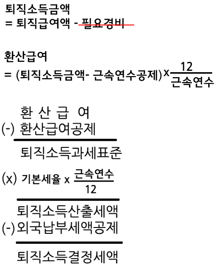

소득세법-2
02 종소과표, 종소세액(산출세액.차가감납부세액) 퇴직, 양도, 소득세신고납부, 비거주자.외국법인
종합소득 과세표준
종합소득공제
@
{소득_종합소득공제}
종합소득공제
인적공제{기본공제, 추가공제}
--
① 기본공제
소득요건
:소득금액 합 : 100만원 이하
:종소금액 + 퇴직소득 + 양도소득
(근로소득만 있는 자는 총급여 500만원 이하)
나이요건
: 20세 이하 , 60세 이상
: (장애인은 나이요건 적용 안 함)
---
② 추가공제
경로(70세 이상)
: 100만원
장애
: 200만원
부녀자
: 50만원
: 요건(ⓐ 또는 ⓑ)
ⓐ 배우자가 있는 경우
ⓑ 배우자는 없지만 기본공제대상자인 부양가족이 있고 세대주인 경우
한부모
: 100만원
: 배우자가 없고 기본공제 대상자인 {직계비속,입양자}가 있는 경우
(부녀자와 한부모가 중복될 경우 한부모만 적용)
③ 연금보험료공제
공적연금보험료 납부액
: 전액공제
④ 주택담보노후연금 이자비용공제
주택담보노후연금 이자비용
(한도: 200만원)
---
특별소득공제
: 보험료공제, 주택자금공제
보험료공제
:근로소득 있는 거주자(일용근로자 제외)
:소득공제액 = {건강보험료.고용보험료.노인장기요양보험료}근로자 부담액
(해당 과세기간의 근로소득금액에서 공제)
@
시행령 제106조
(부양가족등의 인적공제)
어쩌고저쩌고..
②둘 이상의 거주자가 제1항에 따른 공제대상가족을 서로 자기의 공제대상가족으로 하여 신고서에 적은 경우 또는 누구의 공제대상가족으로 할 것인가를 알 수 없는 경우에는 다음 각 호의 기준에 따른다.
1. 거주자의 공제대상배우자가 다른 거주자의 공제대상부양가족에 해당하는 때에는
공제대상배우자로 한다.
2. 거주자의 공제대상부양가족이 다른 거주자의 공제대상부양가족에 해당하는 때에는 직전 과세기간에 부양가족으로 인적공제를 받은 거주자의 공제대상부양가족으로 한다. 다만, 직전 과세기간에 부양가족으로 인적공제를 받은 사실이 없는 때에는 해당 과세기간의 종합소득금액이 가장 많은 거주자의 공제대상부양가족으로 한다.
3. 거주자의 추가공제대상자가 다른 거주자의 추가공제대상자에 해당하는 때에는 제1호 및 제2호의 규정에 의하여 기본공제를 하는 거주자의 추가공제대상자로 한다.
--
③ 해당 과세기간의 중도에 사망하였거나 외국에서 영주하기 위하여 출국한 거주자의 공제대상가족으로서 상속인등 다른 거주자의 공제대상가족에 해당하는 사람에 대해서는
피상속인 또는 출국한 거주자의 공제대상가족으로 한다.
--
④제3항의 경우 피상속인 또는 출국한 거주자에 대한 인적공제액이 소득금액을 초과하는 경우에는 그 초과하는 부분은 상속인 또는 다른 거주자의 해당 과세기간의 소득금액에서 공제할 수 있다. <개정 2010. 2. 18.>
---- 시행령 끝 ----
함께 알아두면 좋아요
○ 사실혼 관계의 배우자는 공제대상 배우자에 해당하지 않음.
○ 과세기간 개시일에 사망한 사람은 해당 과세기간에 인적공제 가능.
○ 과세기간 종료일 전에 사망한 사람에 대해 부양가족에 해당하는지 여부의 판정은 사망일 전날에 따름.
종합소득공제등의 배제
① 분리과세이자소득, 분리과세배당소득, 분리과세연금소득과 분리과세기타소득만이 있는 자에 대해서는 종합소득공제를 적용하지 아니한다.
② 과세표준확정신고를 하여야 할 자가 서류를 제출하지 아니한 경우에는 기본공제 중 거주자 본인에 대한 분(分)과표준세액공제만을 공제한다.
다만, 과세표준확정신고 여부와 관계없이 그 서류를 나중에 제출한 경우에는 그러하지 아니하다.
③ 수시부과 결정의 경우에는 기본공제 중 거주자 본인에 대한 분(分)만을 공제한다.
신용카드 등 사용금액에 대한 소득공제(by조특법)
대상자
근로소득이 있는 거주자(일용근로자 제외)
공제대상액
거주자 본인 및 기본공제대상자(나이의 제한을 받지 않음)인 배우자.직계존비속.입양자의 신용카드 등 사용금액
(주의! 형제자매의 신카사용액은 공제대상 아님)
공제배제액
○ 사업소득 관련 비용, 법인 비용
○ 보험료 또는 공제료
○ 취득세 또는 등록에 대한 등록면허세가 부과되는 재산(중고자동차 제외)의 구입비용
○ 교육비(어린이집, 유치원, 초중고 대학교, 대학원 등)
: 사설학원의 수강료는 공제대상
: 중.고등학생 교복구입비 공제대상
어쩌고저쩌고....
산출세액.차가감납부세액
@
{소득_금융소득_세액계산_특례}
금융소득에 대한 세액계산 특례
저렴한 설명
해당 규정은 금융소득이 기준금액(2천만원)을 초과할 경우 종합소득에 합산하여 기본세율(누진세율, 6%~45%)를 적용하는데
이 때 세부담이 분리과세(14%)에 비하여 너무 증가할까봐, 2천만원 까지는 14%를 적용해줘요.
그런데 결손금이나 종합소득공제 등의 영향으로 분리과세보다 세부담이 줄어드는 문제가 발생해서 최소한 분리과세만큼은 부담시키기위한 규정이에요.
--
종합소득 산출세액 = max[① , ②]
① 2천만원x14% + (종소과표 - 2천만원)x기본세율
② 금융소득x원징세율(*) + (다른 종소금액 - 종소공제)x기본세율
(*)비영업대금의 이익 25%, 이외 14%
---
출자공동사업자의 배당이 있는 경우 ②를 아래 산식에 따라 계산
㉠ 출자공동사업자 배당 + (다른 종소금액 - 종소공제)x기본세율
㉡ 출자공동사업자 배당x14% + (다른 종소금액 - 종소공제)x기본세율
@
주택임대소득에 대한 세액계산 특례
주거용 건물 임대업에서 발생한
수입금액의 합계액이 2천만원 이하인 자의 주택임대소득은 종합과세와 분리과세 중 선택 가능
종합소득 결정세액= [①과 ②중 선택]
① 주택임대소득을 종합과세할 경우의 종합소득 결정세액
② {분리과세 주택임대소득 사업소득금액}x14% - 감면세액 + {분리과세 주택임대소드 그 외의 종합소득 결정세액}
---
분리과세 주택임대소득에 대한 사업소득금액
㉠ 일반
= 총수입금액 - 필요경비(총수입금액x50%) - 200만원*
㉡ 등록임대주택을 임대
= 총수입금액 - 필요경비(총수입금액x50%) - 400만원*
*분리과세 주택임대소득을 제외한 해당 과세기간의 종합소득금액이 2천만원 이하인 경우에만 차감
---
제60조.@(세액감면 및 세액공제 시 적용순위 등)@
① 조세에 관한 법률을 적용할 때 소득세의 감면에 관한 규정과 세액공제에 관한 규정이 동시에 적용되는 경우 그 적용순위는 다음 각 호의 순서로 한다.
@1.@ 해당 과세기간의 소득에 대한 소득세의 감면
@2.@ 이월공제가 인정되지 아니하는 세액공제
@3.@ 이월공제가 인정되는 세액공제.
이 경우 해당 과세기간 중에 발생한 세액공제액과 이전 과세기간에서 이월된 미공제액이 함께 있을 때에는 이월된 미공제액을 먼저 공제한다.
----
소득감면➔
이월공제 인정 안되는 세액공제➔
이월된 미공제 세액공제➔
과세기간 중에 발생한 세액공제
기본세율
: 6% ~ 45%
1,200만원 이하 :
6%
1,200만원 초과~4,600만원 이하:
15%
4,600만원 초과~8,800만원 이하: 24%
8,800만원 초과~1억5천만원 이하: 35%
1억5천만원 초과~ 3억 이하: 38%
3억 초과~ 5억 이하: 40%
5억 초과~ 10억 이하: 42%
10억 초과분:
45%
세액공제
기장세액공제
:간편장부대상자가 확정신고시 {복식부기에 따라 기장}하고 {재무상태표,손익계산서,합계잔액시산표,조정계산서}를 제출하는 경우
공제액
= 산출세액x(복식부기기장 사소금액/종소금액)x20%
:한도 100만원
배제
: 신고할 소득금액을 20%이상 누락
: 관련 {장부,증명서류}를 과세표준 확정신고기간 종료일부터 5년간 보관하지 않은 경우
재해손실공제
재해로 인하여 사업용 자산 총액의 20% 이상을 상실한 경우
재해손실공제액
= ①x재해상실비율 + ②x재해상실비율
①재해발생일 현재 부과되지 아니한 소득세와 미납된 소득세
②재해발생일이 속하는 과세기간의 소득세
한도액: 상실된 자산의 가액
---
외국납부세액공제
사업소득에 대한 외국납부세액은 세액공제 여부를 선택할 수 있음
사업소득 외의 외국납부세액은 세액공제방법에 따라 공제
:10년간 이월공제 가능(국9.17)
(이월 공제후 남은 미공제액은 필요경비산입)
외국납부세액공제액
= 직접외국납부세액 + 의제외국납부세액
한도
= 종소산출세액x(국외원천소득/종소금액)
----
배당세액공제
공제액 = 배당가산액
한도: 종합소득 산출세액 - 비교산출세액
배당가산액
= {금융소득 2천만원 초과분 중 GrossUp대상 배당소득}x11%
-----
자녀세액공제
㉠자녀수공제(7세이상)
:7세미만 취학아동 포함
(미취학 아동에 대한 아동수당과 중복을 피하기 위해 7세이상)
:1명: 15만원
:2명: 30만원
:3명이상: 30만원 + (자녀수-2명)x30만원
㉡출산.입양공제
: 첫째:30만원
: 둘째:50만원
: 셋째 이상:70만원
-----
@연금계좌세액공제
@
: Min[①, ②] x 12%(또는 15%)
①연금저축계좌 납입액 + 퇴직연금계좌 납입액
②700만원
:종합소득금액이 4,000만원(*1) 이하인 거주자는 15%
(*1)(근로소득만 있는 경우는 총급액 5,500만원)(국7.17)
---
연금저축계좌 납입액 한도
:400만원(또는 300만원)
:종합소득금액 1억원(*1) 초과인 거주자는 300만원
:(*1)(근로소득만 있는 경우 총급여액 1억2천만원).
---
조세특례제한법상 세액공제
㉠ 월세세액공제(10%,12%)
:대상자{근로소득 있는 거주자}
㉡성실사업자등의 의료비.교육비.월세 세액공제(조특법 122조3)
:대상자{성실사업자, 성실신고확인서 제출자}
의료비세액공제
= 의료비 지출액x15%(난임시술비 20%)
교육비세액공제
= 교육비 지출액x15%
월세액세액공제(종소금액 6천만원 이하인 자)
= min[월세액, 750만원]x10%(12%)
: (종소금액 4천5백만원 이하인 경우 12%)
----
보험료세액공제
①x15% + ②x12%
: ① 장애인전용보장성보험료(100만원 한도)
: ② 일반보장성보험료(100만원 한도)
---
의료비세액공제
근로소득있는 자(일용근로자 제외)가 기본공제대상자(나이 소득 요건의 제한을 받지 않음)를 위하여 공제대상 의료비를 지급한 경우
(① + ②) x 15% + ③ x 20%
① 일반(한도 700만원)
: 지출액 - 총급여 x 3%
② 특정
: 본인, 65세이상, 장애인
③ 난임시술비
미용.성형수술을 위한 비용 및 건강증진을 위한 의약품 구입비용은 공제대상의료비에 포함되지 않음
---
교육비세액공제
근로소득있는 거주자가 본인, 기본공자대상자를 위하여 교육비를 지급한 경우.
피교육자 범위
: 기본공제대상자(나이제한 없음)인 배우자, 직계비속, 입양자, 위탁아동, 형제자매
Min[①, ②] x 15%
①교육비 지출액 - {소득세.증여세}가 비과세 되는 학자금.장학금
②한도
본인의 일반교육비:한도없음
대학생 900만원/명
취학전 아동, 초.중.고: 300만원/명
장애인 특수교육비: 한도없음
.
기부금세액공제
-----
@{소득_표준세액공제}
표준세액공제
근로소득이 있는 거주자
㉠ 항목별 특별세액공제 적용 신청한 경우,
:{보험료.의료비.교육비.기부금} 세액공제,
㉡ 항목별 {특별세액공제, 특별소득공제, 월세세액공제} 신청하지 않은 경우
:표준세액공제(13만원),
근로소득이 없는 거주자
㉠ 성실사업자
: 표준세액공제(12만원) + 기부금세액공제
㉡ 조세특례제한법상 성실사업자
A 또는 B
A:{의료비.교육비.월세 + 기부금}세액공제
B:표준세액공제(12만원) + 기부금세액공제
㉢ 성실신고확인서 제출자
: 표준세액공제(7만원) + {의료비.교육비.월세 + 기부금}세액공제
㉣ 위 외의 자
: 표준세액공제(7만원) + 기부금세액공제
@
---
표준세액공제
㉠근로소득 있는 거주자로서 항목별 특별세액공제.항목별 특별소득공제.월세세액공제 신청하지 않은 사람
:13만원
㉡소득세법상 성실 사업자
:12만원
㉢조세특례제한법상 성실사업자로서 의료비.교육비.월세 세액공제 신청을 하지 않은 사람
::12만원
㉣근로소득 없는 거주자로서 종합소득 있는 사람(성실사업자 제외)
:7만원
.
---------------
퇴직소득 시작
---------------
@
{퇴직소득}
퇴직소득
분류과세
: 거주자의 종합소득 및 퇴직소득에 대한 과세표준은 각각 구분하여 계산한다.
퇴직소득의 범위
① 사용자부담금을기초로 하여 현실적인 퇴직을 원인으로 지급받는 소득
② 공적연금 관련법에 따라 받는 일시금(2002.1.1. 이후 납입분)
③ 지연지급에대한 이자를 함께 지급하는 경우 해당 이자
④ [과학기술인공제회법]에 따라 지급받는 과학기술발전장려금
⑤ [건설근로자의 고용개선 등에 관한 법률]에 따른 퇴직공제금
⑥ 2016.1.1이후 가입한 소기업.소상공인 공제부금에서 발생한 소득(법정 사유)
어쩌고저쩌고....
퇴직판정
다음 중 어느하나에 해당하는사유가 발생했으나 퇴직급여를 실제로 받지 않은 경우는 퇴직으로 보지 않을 수 있다.
① 종업원이 임원이 된 경우
② 합병.분할 등 조직변경, 사업양도, 직.간접으로 출자관계있는 법인으로의 전출 또는 동일한 사업자의 다른 사업장으로의 전출이 이루어진 경우
③ 상근 임원이 비상근임원이 되 경우
④ 비정규직 근로자(기간제근로자, 단시간근로자)가 정규직근로자로 전환된 경우
---
다음의사유로 퇴직급여를 미리 지급받은 경우 그 지급받은날에 퇴직한 것으로 본다
① 퇴직금의 중간정산 사유에 해당하는 경우
② 퇴직연금제도가 폐지되는 경우
퇴직소득의 수입시기
원칙: 퇴직한 날
[국민연금법]에 따른 일시금과 [건설근로자의 고용개선 등에 관한 법률]에 따른 퇴직공제금
: 소득을 지급받는 날(분할하여 지급받은 경우에는 최초로 지급받는 날)
---
퇴직소득과.표(2016.1.1이후 발생분)
= (퇴직소득금액 - 근속연수공제 )x (12/근속연수) - 환산급여공제
퇴직소득과.표(2015.12.31이전 발생분)
= 어쩌고저쩌고....
---
퇴직소득세
= 퇴직소득과.표 x 세율 x (근속연수/12)

원천징수특례
㉠ 1월부터 11월까지의 사이에 퇴직한 사람의 퇴직소득을 해당 과세기간의 12월31일까지 지급하지 아니한 경우
: 12월31일에 지급한 것으로 보아 원천징수
㉡ 12월에 퇴직한 사람의 퇴직소득을 다음 연도 2월 말까지 지급하지 아니한 경우
: 다음연도 2월 말이에 지급한 것으로 보아 원천징수
*공적연금 일시금에 따른 퇴직소득에 대해서는 위의 규정을 적용하지 아니한다
----- 퇴직소득 끝 -----
@
원천징수
(원칙) 퇴직소득을 지급할 때 소득세를 원천징수한다
(과세이연)
거주자의 퇴직소득이 다음중 어느 하나에 해당하는 경우 해당 퇴직소득에 대한 소득세를 연금외수령하기 전까지 원천징수하지 아니한다.
(이 경우 이미 원천징수된 경우, 해당 거주자는 원천징수세액에 대한 환급신청을 할 수 있다)
① 퇴직일 현재 연금계좌에 있거나 연금계좌로 지급되는 경우
② 퇴직하여 지급받은 날부터 60일 이내에 연금계좌에 입금되는 경우
-----------
양도소득세
-----------
제88조@(정의)@
이 장에서 사용하는 용어의 뜻은 다음과 같다.
@1.@ “양도”란 자산에 대한 등기 또는 등록과 관계없이 매도, 교환, 법인에 대한 현물출자 등을 통하여 그 자산을 유상으로 사실상 이전하는 것을 말한다. 이 경우 대통령령으로 정하는 부담부증여 시 수증자가 부담하는 채무액에 해당하는 부분은 양도로 보며,
다음 각 목의 어느 하나에 해당하는 경우에는 양도로 보지 아니한다.
@가.@ 「도시개발법」이나 그 밖의 법률에 따른 환지처분으로 지목 또는 지번이 변경되거나 보류지(保留地)로 충당되는 경우
@나.@ 토지의 경계를 변경하기 위하여 「공간정보의 구축 및 관리 등에 관한 법률」 제79조에 따른 토지의 분할 등 대통령령으로 정하는 방법과 절차로 하는 토지 교환의 경우
@다.@ 위탁자와 수탁자 간 신임관계에 기하여 위탁자의 자산에 신탁이 설정되고 그 신탁재산의 소유권이 수탁자에게 이전된 경우로서 @위탁자가@ 신탁 설정을 해지하거나 신탁의 수익자를 변경할 수 있는 등 @신탁재산을 실질적으로 지배하고 소유@하는 것으로 볼 수 있는 경우
@
{양도소득_범위}
양도소득의 범위
1그룹
㉮토지,건물
㉯부동산에 관한 권리
: ⓐ취득할 수 있는 권리
: ⓑ이용할 수 있는 권리
__지상권, 전세권
__등기된 부동산임차권(*1)
㉰기타자산
: 토.건 및 부동산에 관한 권리와 함께 양도하는 영업권
: 시설물 이용권
: 특정주식 A, B
: 부동산과 함께 양도하는 이축권(*2)
(이축권가액을 별도로 감정하여 그 감정가액을 구분 신고하는 경우는 제외)
---
(*1)부동산임차권은 물권이 아니라 채권이에요
: 다시말해 채권의 대상이 부동산이 아니라 임대인이에요
: 그런데 등기한 경우에는 전세권(물권)과 같은 효력을 지니기 때문에 양도소득세 과세대상이 되는 것이에요
(*2)이축권
: 그린벨트 인근지역으로 부지를 마련하여 주택을 신축할 수 있는 권리
---
@2그룹(주식)
@
(신주인수권 및 증권예탁증권 포함)
@주권상장 주식@
ⓐ대주주가 양도하는 주식
ⓑ대주주 아닌 자가 장외거래로 양도하는 주식
@주권비상장 주식@
원칙: 과세
예외(비과세):
대주주 아닌 자가 장외거래로 양도하는 {중소기업,중견기업}주식
---
@3그룹(파생상품)
@
.어쩌고저쩌고....
---
@4그룹
@(새로 추가됨)
신탁의 수익권
@
@{양도소득_양도로_보지_않는_경우}
양도로 보지 않는 경우
㉠ 양도담보
: 채무불이행으로 자산을 변제에 충당하는 경우는 양도
㉡ {지목, 지번}의 변경By환지처분, 보류지로 충당
보류지
:사업시행자의 사업비용 충당과 공공시설 설치를 위한 용지
(보류지 중 공사비에 충당하기 위해 시행자가 처분할 수 있는 토지를 체비지라고 해요)
---
㉢ 부부공동재산을 분할By이혼
㉣ 신탁해지를 원인으로 소유권이전등기
㉤ 명의신탁
㉥ 소유자산을 경매.공매로 자기가 재취득
㉦ 위탁자와 수탁자 간 신임관계에 기하여 위탁자의 자산에 신탁이 설정되고 그 신탁재산의 소유권이 수탁자에게 이전된 경우로서
위탁자가 신탁 설정을 해지하거나 신탁의 수익자를 변경할 수 있는 등 신탁재산을 실질적으로 지배하고 소유하는 경우
㉧ 공동소유의 토지를 소유지분별로 단순히 분할
어쩌고저쩌고....
@
@{양도소득_비과세}
비과세
㉠ 파산선고에 의한 처분으로 발생하는 소득
㉡ 일정한 농지의 교환 또는 분합으로 발생하는 소득
㉢ 1세대1주택의 양도로 발생하는 소득
: 1세대가 국내의 1주택을 2년이상 보유
: (조정지역은 보유기간 중 2년이상 거주)
㉣ 「지적재조사에 관한 특별법」에 따른 경계의 확정으로 지적공부상의 면적이 감소되어 같은 법에 따라 지급받는 조정금
어쩌고저쩌고...
@
시행령.제157조@(주권상장법인대주주의 범위)@
---
양도소득세 @대주주 요건@
㉠유가증권 상장 주식@
: 1% 또는 시가총액 10억원
㉡코스닥 상장 주식@
: 2% 또는 시가총액 10억원
㉢코넥스 상장, 비상장 주식@
: 4% 또는 시가총액 10억
@
(양도소득의 범위)@
3. 다음 각 목의 어느 하나에 해당하는 주식등의 양도로 발생하는 소득
가. 주권상장법인의 주식등으로서 다음의 어느 하나에 해당하는 주식등
1)주권상장법인의 대주주가 양도하는 주식등
2) 1)에 따른 대주주에 해당하지 아니하는 자가 「자본시장과 금융투자업에 관한 법률」에 따른 증권시장에서의 거래에 의하지 아니하고 양도하는 주식등.
다만, 「상법」에 따른 주식의 포괄적 교환ㆍ이전 또는 같은 법에 따른 주식의 포괄적 교환ㆍ이전에 대한 주식매수청구권 행사로 양도하는 주식등은 제외한다.
---
나. 주권비상장법인의 주식등.
다만, 소유주식의 비율ㆍ시가총액 등을 고려하여 주권비상장법인의 대주주에 해당하지 아니하는 자가 「자본시장과 금융투자업에 관한 법률」 제283조에 따라 설립된 한국금융투자협회가 행하는 같은 법 제286조제1항제5호에 따른 장외매매거래에 의하여 양도하는 중소기업 및 중견기업의 주식등은 제외한다.
어쩌고저쩌고...
@
사업용 유형자산(토지, 건물 및 부동산에 관한 권리)과 함께 양도하는 영업권은 양도소득으로 과세한다@
양도소득세
1세대 1주택 비과세
1세대가 양도일 현재 국내에 1주택(주택부수토지 포함)을 보유하고 있는 경우로서 해당 주택의 보유기간이 2년이상인 주택
(2017.8.3 이후 취득당시 조정대상지역에 있는 주택의 경우에는 보유기간 2년이상이고 그 보유기간 중 거주기간이 2년이상)
--
1세대 요건
원칙
:거주자 및 그 배우자가 그들과 같은 주소 또는 거소에서 생계를 같이하는 자와 함께 구성하는 가족단위
예외
(다음의 경우 배우자가 없어도 1세대로 봄)
: 30세 이상
: 배우자가 {사망,이혼}
: 종합.퇴직.양도 소득이 기준중위소득의 40%이상으로 소유주택을 관리하면서 독립된 생계를 유지
---
1주택 요건
주택
: 사실상 주거용으로 사용하는 건물(용도가 불분명시 공부상의 용도를 따름)
다가구주택
: 1세대 1주택 여부를 판정함에 있어서 다가구주택의 경우에는 한 가구가 독립하여 거주할 수 있도록 구회된 부분을 각각 하나의 주택으로 본다. 다만, 해당 다가구주택을 구획된 부분을 각각 하나의 주택으로 본다. 다만, 해당 다가구주택을 구획된 부분별로 양도하지 아니하고 하나의 매매단위로 하여 양도하는 경우에는 그 전체를 하나의 주택으로 본다.
고가주택
: 실지양도가액이 9억원을 초과하는 주택
(9억원까지 비과세, 9억원 초과분만 과세)
-----
@보유기간.거주기간 요건@
원칙: 보유기간 2년이상
조정지역의 주택인 경우
: 보유기간 2년이상이고 그 보유기간 중 거주기간이 2년 이상
---
:2주택 이상을 보유한 1세대가 1주택 외의 주택을 모두 처분한 경우에는 처분 후 1주택을 보유하게 된 날부터 보유기간을 기산한다
---
@{양도소득_1주택으로_인정하는 경우}
다음의 경우 2주택 보유시에도 1주택으로 인정
① 일시적 2주택
종전주택취득 후 1년이상 지나고 다른 주택취득 후 3년이내 종전주택 양도
② 상속으로 인한 2주택
상속받은 주택과 일반주택 중 일반주택 양도(not 상속받은 주택)
(상속개시일 이전 2년이내 피상속인으로부터 증여받은 주택은 일반주택으로 보지 않음)
③ 동거봉양으로 인한 2주택
직계존속을 동거봉양하기 위해 세대를 합침으로써 2주택이 된경우 10년이내 먼저 양도하는 주택
④ 혼인으로 인한 2주택
5년 이내 먼저 양도하는 주택
⑤ 부득이한 사유로 취득한 수도권 밖 주택
취학.근무상 형편, 질병의 요양, 기타 부득이한 사유로 수도권 밖 소재 주택을 취득하여 2주택이 된 경우
부득이한 사유가 해소된 날부터 3년 이내 일반주택 양도
⑥ 문화재주택
문화재주택과 일반주택을 소유한 자가 일반주택을 양도
⑦ 농어촌주택
농어촌주택과 일반주택을 소유한 자가 일반주택 양도
@
-----
2년 보유 요건의 예외
{보유기간.거주기간}의 제한을 받지 않는 경우
○ 민간건설임대주택 또는 공공건설임대주택을 취득하여 양도하는 경우로서 해당 건설임대 주택의 임차일부터 양도일까지의 기간 중 세대전원이 거주(부득이한 사유로 세대의 구성원 중 일부가 거주하지 못하는 경우 포함)한 기간이 5년 이상인 경우
○ 사업인정 고시일 전에 취득한 주택 및 부수토지의 전부 또는 일부가 협의매수.수용되는 경우
(양도일.수용일부터 5년이내 양도하는 그 잔존주택 및 부수토지 포함)
○ 해외이주 또는 1년 이상 국외 거주를 필요로 하는 취학.근무상 형편으로 세대전원이 출국하는 경우
(다만, 출국일 현재 1주택을 보유하고 출국일부터 2년이내에 양도하는 경우에 한함)
○ 1년이상 거주한 주택을 취학 등 부득이한 사유로 세대 전원이 다른 시.군으로 주거를 이전하면서 양도하는 경우
제100조@
(양도차익의 산정)@
① 양도차익을 계산할 때 양도가액을 실지거래가액(매매사례가액ㆍ감정가액이 적용되는 경우 그 매매사례가액ㆍ감정가액 등을 포함한다)에 따를 때에는
<+> 취득가액도 실지거래가액(매매사례가액ㆍ감정가액ㆍ환산취득가액이 적용되는 경우 그 매매사례가액ㆍ감정가액ㆍ환산취득가액 등을 포함한다)에 따르고,
<+> 양도가액을 기준시가에 따를 때에는 취득가액도 기준시가에 따른다. (개정 2019. 12. 31.)
② 제1항을 적용할 때 양도가액 또는 취득가액을 실지거래가액에 따라 산정하는 경우로서 토지와 건물 등을 함께 취득하거나 양도한 경우에는
<+> 이를 각각 구분하여 기장하되 토지와 건물 등의 가액 구분이 불분명할 때에는 취득 또는 양도 당시의 기준시가 등을 고려하여 안분계산(按分計算)한다.
<+> 이 경우 공통되는 취득가액과 양도비용은 해당 자산의 가액에 비례하여 안분계산한다.
③ 제2항을 적용할 때 토지와 건물 등을 함께 취득하거나 양도한 경우로서 그 토지와 건물 등을 구분 기장한 가액이 같은 항에 따라
<+> 안분계산한 가액과 100분의 30 이상 차이가 있는 경우에는 토지와 건물 등의 가액 구분이 불분명한 때로 본다.,
.
양도가액.취득가액
장기할부조건으로 취득
현할차 계상액
: 취득가액에 포함하지 않음
현할차 상각액
: 사업소득의 필요경비로 산입했거나 산입할 금액은 취득가액에서 공제
부당행위계산 부인
소득세법상 특관인과의 거래시 부당행위계산 부인이 적용되는 자산의 양도가액 또는 취득가액은 시가
(거래차액이 3억원 이상이거나 상증세법 시가의 5%이상인 경우에만 적용)
: 상장주식은 법인세법상 시가를 적용하며 중요성 요건 적용하지 않음
: 개인과 법인간 거래에서 법인세법에 의한 부당행위계산의 부인규정이 적용되지 않는 경우에는 양도소득세도 부당행위계산의 부인규정 적용하지 않음)
이중과세조정이 필요한 경우
㉠고가 양도시 {법인세법에 따라 상여.배당 등으로 처분}되거나 {상증세법에 따라 상속제, 증여세가 과세}된 경우
{상여.배당 등 처분된 금액}by법인세법
양도가액 = 법인세법에 따른 시가
{상속,증여재산가액}by상증세
양도가액 = 당초양도가액 - {상속,증여재산가액}by상증세
(고가양도한 부분에 대해 증여세를 맞았기 때문에 그 금액만큼 양도가액을 낮춰줘야 이중과세가 생기지 않아요)
----
㉡ 취득시 {법인세법에 따라 상여.배당 등으로 처분}되거나 {상증세법에 따라 상속제, 증여세가 과세}된 경우
취득가액 = 당초취득가액 + {상여.배당 등 처분된 금액}by법인세
취득가액 = 당초취득가액 + {상속,증여재산가액}by상증세
-----
양도가액 적용
실지거래가액➔매매사례가액➔감정가액➔기준시가
-----
취득가액
실지거래가액➔매매사례가액➔감정가액➔환산취득가액➔기준시가
----
:양도차익을 계산할 때 양도가액을 기준시가에 따를 때에는 취득가액도 기준시가에 따른다(국7.17)
----- 양도가액.취득가액 끝 -----
양도가액
(-)취득가액
(-)기타필요경비
------
양도차익
(-)장기보유특별공제
------
양도소득금액
(-)양도소득기본공제
------
양도소득과세표준
(x)양도소득세율
------
양도소득산출세액
(-)감면공제세액
------
결정세액
(+) 가산세
(-)기납부세액
-----
차가감납부세액
양도차손공제
같은 그룹에서만 공제가능
다음순서대로
1. 같은 세율적용 자산의 양도소득금액에서 공제
2. 다른 세율적용 자산의 양도소득금액 비율로 안분계산하여 공제
: 미공제액된 양도차손은 소멸됨
----- 양도차손공제 끝 -----
@
{소득_양도.취득시기}
양도소득세 양도시기, 취득시기
일반: 대금청산일
대금청산일이 불분명 한 경우:
: 등기.등록 접수일 또는 명의개서일
: 대금청산일 전에 소유권이전등기(등록, 명의개서 포함)를 한 경우에는 등기접수일
---
장기할부조건
:빠른날{소유권이전등기* 접수일, 인도일, 사용수익일}
*(등록.명의개서 포함)
:현재가치 불가
:회수기일도래기준 불가
---
자기가 건설한 건축물
: 사용검사필증교부일
사용검사 전에 사실상 사용하거나 사용승인을 얻은 경우
: {사실상 사용일 또는 사용승인일}
건축허가를 받지 않고 건축한 건축물
: 사실상의 사용일
---
@법정주식 A@
:양도시기
주주 1인과 기타주주가 주식 등을 양도함으로써 해당 법인의 주식 등의 합계액의 50% 이상이 양도되는 날
---
@점유취득@
:점유를 개시한 날
---
다음 시기 이전에 취득한 경우 다음의 날에 취득한 것으로 본다
(취득시기 의제)
ⓐ토.건.부동산에 관한 권리.기타자산
: 1985.1.1.
ⓑ주식
: 1986.1.1.
@
양도소득세.@세율@
@1그룹@
어쩌고저쩌고....
비사업용 토지: 기본세율 + 10%
미등기양도자산:70%
---
@2그룹@ 주식의 양도
@㉠@ 국내주식
@대주주@
1년 미만 보유한 중소기업 외의 주식
: 30%
위에 해당하지 아니하는 주식등
3억이하: 20%
3억초과: 6천만원 + 3억원초과x25%
---
@대주주가 아닌자@
중소기업주식 : 10%
위에 해당하지 않는 주식: 20%
@㉡@국외주식 등
중소기업 주식: 10%
위에 해당하지 않는 주식: 20%
---
@3그룹@ 파생상품: 10%
---
@4그룹@ 신탁수익권
: 20%(3억초과분 25%)
---
@
{양도소득_예정신고납부}
예정신고납부
○ 국외주식 등과 파생상품은 제외
○ 양도차익이 없거나 양도차손이 발생한 경우에도 신고하여야 함
○ 예정신고.납부 하지 않은 경우 가산세 부과됨
1그룹
: 양도일이 속하는 달의 말일부터 2개월
2그룹(국내주식)
: 국외주식 제외
: 양도일이 속하는 @반기@의 말일부터 2개월
3그룹(파생상품)
: 예정신고 없음
4그룹(신탁수익권)
: 양도일이 속하는 달의 말일부터 2개월
---
부담부증여 중 채무 부분의 양도로 보는 경우:
(양도일이 속하는 달의 말일부터 3개월 이내)
(증여세 신고기한과 동일하게 맞춤)
---
납부할 세액이 1천만원을 초과하는 경우 2개월 이내에 분할납부 가능
납부할 세액이 2천만원 이하
: 1천만원 초과액
납부할 세액이 2천만원 초과
: 그 세액의 50%이하 금액
@
@
{양도소득_장기보유특별공제}
장기보유특별공제
적용대상
①{토지.건물} 보유기간 3년 이상
제외
㉠미등기양도자산
㉡다주택자의 조정대상내 주택
---
②조합원입주권(조합원으로부터 취득한 것 제외)
: 관리처분계획 인가 전 {토지.건물}분 양도차익으로 한정
--- 장기보유특별공제 끝 -----
@
양도소득 기본공제
각 그룹별 : 250만원
: 미등기양도자산은 적용 제외
---
양도소득 금액에 감면소득금액이 있는 때에는 해당 감면소득금액 외의 양도소득금액에서 먼저 공제한다.
--- 양도소득 기본공제 끝 -----
@
{양도소득_이월과세}
양도소득세.@이월과세@
과세요건
배우자, 직계존비속으로부터 증여받은 {토지,건물,특정시설물이용권,부동산을 취득할 수 있는 권리}를 5년이내 양도
납세의무자
수증자
양도소득 계산
취득가액: {증여자}의 취득가액
취득시기: {증여자}의 취득한 날
증여세처리
필요경비에 산입
예외
(이월과세를 적용하지 않는 경우)
㉠ 사업인정고시일부터 소급하여 2년 이전에 증여받은 경우로서 「공익사업을 위한 토지 등의 취득 및 보상에 관한 법률」이나 그 밖의 법률에 따라 협의매수 또는 수용된 경우
㉡ 1세대 1주택 비과세 대상[같은 호에 따라 양도소득의 비과세대상에서 제외되는 고가주택(이에 딸린 토지를 포함한다)을 포함한다]의 양도에 해당하게 되는 경우
㉢ 이월과세 적용 시 결정세액이 이월과세를 적용하지 아니하고 계산한 결정세액보다 적은 경우
@
-----
@
{양도소득_증여후_양도부인}
양도소득세.@증여 후 양도부인@
@과세요건
@
: 특수관계인으로부터 증여받은 양도소득세 과세대상 자산을 5년이내 양도
: A+B > C
: A(증여세), B(수증자의 양도세)
: C(증여자가 직접 양도한 것으로 볼 때 양도세)
@납세의무자
@
: 당초 증여자
: {수증자}는 연대납세의무를 짐
@양도소득 계산
@
취득금액: {증여자}의 취득가액
취득시기: {증여자}의 취득한 날
@증여세처리
@
: 부과하지 않음
(이미 부과한 경우는 환급)
---- 증여후 양도부인 끝 -----
@
@
국외전출세@
국내 주식 등을 출국일에 양도한 것으로 보아 국외전출자에게 양도소득으로 과세
@
국외전출자@
다음의 요건을 모드 갖추어 출국하는 거주자
㉠ 출국일 10년 전부터 출국일까지 기간 중 국내에 주소나 거소를 둔 기간의 합계가 5년 이상일 것
㉡ 출국일이 속하는 연도의 직전 연도 종료일 현재 대주주에 해당 할 것
@
{소득_국외자산양도}
국외자산양도
납세의무자
해당 자산의 양도일까지 계속 5년 이상 국내에 주소 또는 거소를 둔 자
과세대상
㉠토지와 건물
㉡부동산에 관한 권리
: 부동산 임자권은 등기 여부와 관계없이 과세대상
㉢기타자산
----
해외주식
: 국내주식과 합산 양도손익 통산
해외파생상품
: 국내파생상품과 합산 양도손익 통산
장기보유 특별공제
적용하지 않음
양도소득 기본공제
(미등기자산도 기본공제 가능)
250만원
해외주식
: 국내주식의 양도손익과 합산하여 250만원 공제
해외파생상품
: 국내파생상품과 합산하여 250만원 공제
외국납부세액
외국납부세액공제나 외국납부세액의 필요경비산입 중 선택적용
: 이월공제 불가
--
○ 양도가액 및 취득가액은 원칙적으로 해당 자산의 양도 또는 취득 당시의 실지거래가액에 의하여 계산한다.
○ 양도차익의 외환환산은 양도가액 및 필요경비를 수령하거나 지출한 날 현재 [외국환거래법]에 의한 기준환율 또는 재정환율을 적용한다.
---- 국외자산양도 끝 -----
@
비거주자
@
{소득_비거주자}
비거주자에 대한 과세방법
비거주자에 대하여 과세하는 소득세는 해당 국내원천소득을 종합하여 과세하는 경우와 분류하여 과세하는 경우
및 그 국내원천소득을 분리하여 과세하는 경우로 구분하여 계산한다.
종합과세시
비거주자의 소득에 대한 소득세의 과세표준과 세액의 계산에 관하여는 이 법 중 거주자에 대한 소득세의 과세표준과 세액의 계산에 관한 규정을 준용한다.
다만, 인적공제 중 비거주자 본인 외의 자에 대한 공제와 특별소득공제, 자녀세액공제 및 특별세액공제는 하지 아니한다.
---
국내원천 인적용역소득
국내에서 대통령령으로 정하는 인적용역을 제공함으로써 발생하는 소득
(국외에서 제공하는 인적용역 중 대통령령으로 정하는 용역을 제공함으로써 발생하는 소득이 조세조약에 따라 국내에서 발생하는 것으로 간주되는 경우 그 소득을 포함한다).
이 경우 그 인적용역을 제공받는 자가 인적용역 제공과 관련하여 항공료 등 대통령령으로 정하는 비용을 부담하는 경우에는 그 비용을 제외한 금액을 말한다.
----
국내원천 부동산소득
국내에 있는 부동산 또는 부동산상의 권리와 국내에서 취득한 광업권, 조광권, 지하수의 개발ㆍ이용권, 어업권, 토사석 채취에 관한 권리의 양도ㆍ임대,
그 밖에 운영으로 인하여 발생하는 소득. 다만, 국내원천 부동산등양도소득은 제외한다.
분류과세
㉠ 국내원천 퇴직소득
: 거주자와 같은 방법으로 분류과세
㉡ 국내원천 부동산등양도소득
: 양도소득 지급시 원천징수
min(지급금액x10%, 양도차익x20%)
: 거주자와 동일하게 양도소득세를 예정.확정신고납부
@
@
{소득_국내사업장}
국내사업장
국내에서 사업의 전부.일부를 수행하는 고정된 장소
국내사업장에 해당하는 경우
: 지점.사무소.영업소
: 상점이나 그 밖의 고정된 판매장소
: 작업장.공장.창고
: 6개월을 초과하여 존속하는 건축장소, 건설.조립.설치공사의 현장 또는 이와 관련된 감독을 하는 장소
: 천연자원의 탐사 및 채취장소 등
어쩌고저쩌고...
국내사업장에 해당하지 않는 경우
: 자산의 단순한 구입만을 위하여 사용하는 일정한 장소
: 판매를 목적으로 하지 아니하는 자산의 저장.보관만을 위하여 사용하는 일정한 장소
: 광고,선전, 정보의 수집 및 제공, 시장조사, 그 밖에 이와 유사한 활동만을 위하여 사용하는 일정한 장소
: 자산을 타인으로 하여금 가공만하게 하기 위하여 사용하는 일정한 장소
어쩌고저쩌고...
의제국내사업장
어쩌고저쩌고...
@
신고납부
종합소득금액, 퇴직소득금액,양도소득금액 있는 거주자는 해당소득의 과세표준을 그 과세기간의 다음연도 5월 1일부터 5월 31일까지 관할세무서장에게 신고
--
'분리과세 주택임대소득', '계약금이 위약금.배상금으로 대체되는 소득'있는 경우 종합소득 과세표준 확정신고하여야 함
---
복식부기의무자
: 확정신고시 {재무상태표, 손익계산서, 합계잔액시산표, 조정계산서}를 제출하여야 함
(제출하지 않은 경우 무신고로 봄)
--
과세표준확정신고를 하여야 할 거주자가 국외이주를 위하여 출국하는 경우에는 출국일이 속하는 과세기간의 과세표준을 출국일 전날까지 신고하여야 한다
--
@
{소득_중간예납}
중간예납
중간예납의무자
다음의 자를 제외한다
㉠다음의 소득만 있는자
:이자.배당.근로.연금 또는 기타소득
(결국 사업소득 있으면 과세한다는 이야기)
:사업소득 중 속기.타자 등 사무지원 서비스업
:사업소득 중 수시 부과소득
:분리과세 주택임대소득(새로추가)
㉡ 과세기간 중 신규로 사업을 시작한 자
-----
:중간예납세액이 30만원 미만인 경우 소득세를 징수하지 않는다
----
납세지 관할 세무서장은 중간예납세액을 납부하여야 할 거주자에게 11월 1일부터 11월 15일까지의 기간에 중간예납세액의 납부고지서를 발급하여야 한다.
---
중간예납세액 납부
: 11월 30일까지 납부
(11월 중 고지납부)
소액부징수
: 30만원 미만
@
@
{토지등_매매차익_예정신고}
토지등 매매차익 예정신고
매매차익이 없거나 매매차손이 발생했을 때도 신고해야 함
대상자
: 토지 등을 매매한 부동산매매업자
예정신고기한
: 매매 월의 말일로부터 2개월 이내
세액계산
매매차익 = 매매가액 - 필요경비 - 장기보유특별공제
(양도소득세 기본공제 없음)
산출세액 = 매매차익x양도소득세율
(2년미만 보유한 경우에도 기본세율이 적용)
---- 토지 등 매매차익 예정신고 끝 -----
분할납부
{중간예납, 예정신고납부 또는 확정신고납부}시 납부할 세액이 각각 1천만원을 초과하는 자
: 2개월 이내에 분할납부 가능
납부할 세액이 2천만원 이하
: 1천만원 초과액
납부할 세액이 2천만원 초과
: 그 세액의 50%이하 금액
연말정산시기
{간편장부대상자인 보험모집인, 방문판매인, 음료 배달원}의 사업소득
: 다음연도 2월분 사업소득을 지급하는 때
---
근로소득
: 다음연도 2월분 근로소득 지급하는 때
: 퇴직자의 퇴직하는 달의 근로소득 지급하는 때
---
연금소득
: 다음 연도 1월분 공적연금 소득을 지급하는 때
(사망한 경우에는 사망일이 속하는 달의 다음 다음 달 말일)
---- 연말정산 시기 끝 ----
@{소득_확정신고의_면제}
확정신고의 면제(국7.18)
다음 중 어느 하나에 해당하는 거주자는 과세표준확정신고를 하지 않을 수 있다.
① 근로소득만 있는 자
②퇴직소득만 있는 자
③공적연금소득만 있는자 자
④ 연말정산되는 사업소득만 있는자
: 간편장부대상자인 보험모집인 등
⑤ 원천징수되는 기타소득으로서 연말정산되는 종교인소득만 있는 자
⑥ 퇴직소득과 근로소득만 있는 자
__(퇴직소득이 근로소득과 분류과세되므로 섞이지 않아요)
...
⑩ 분리과세{이자소득,배당소득,연금소득,기타소득}만 있는자
⑬ 수시부과 후 추가로 발생한 소득이 없을 경우
@
사업장현황신고
:부가가치세 면세사업자가 확정신고 전에 업종별로 수입금액등을 미리 신고
:2이상의 사업장이 있는 자는 사업장별로 신고
:해당과세기간의 다음 연도 2월 10일까지 신고
---
신고의무 면제
다음 중 어느하나에 해당하는 사업자는 사업장 현황신고 하지 아니할 수 있다
①납세조합에 가입하여 수입금액을 신고하는 자
②보험모집인
③음료품 소매사업자 등
---- 사업장현황신고 끝 -----
@{소득_성실신고확인서제도}
성실신고확인서 제도
수입금액(사업용 유형자산을 양도함으로써 발생하 수입금액 제외)이 업종별로 일정 규모 이상의 사업자는
사업소득금액의 적정성을 세무사 등이 확인하고 작성한 성실신고확인서를 납세지 관할세무서장에게 제출하여야 한다.
신고기한 연장
: 다음 연도 5월 1일부터 6월 30일까지
세액공제
ⓐ {교육비.의료비.월세}세액공제
ⓑ 성실신고확인비용 세액공제
: 성실신고확인에 직접 사용한 비용x60%
: (한도:120만원)
성실신고확인서 미제출에 대한 불이익
㉠성실신고확인서 미제출 가산세(국7.18)
A x (B/C) x 5%
A:종합소득 산출세액
B:사업소득금액
C:종합소득금액
㉡ 세무조사 대상이 될 수 있음
@
원천징수
납부
(원칙) 징수일이 속하는 달의 다음 달 10일까지
(예외) 반기별 납부
---
주요 원천징수 제외 대상
: 금융소득 중 국외금융소득
: 국외근로소득
: 기타소득 중 {뇌물.배임수재 등으로 받은 금액}
: 기타소득 중 {계약금이 위약금으로 대체된 금액}
: 양도소득
원천징수시기 특례
원천징수의 배제
원천징수대상 소득으로서 소득세가 원천징수되지 아니한 소득이 종합소득에 합산되어 종합소득에 대한 소득세가 과세된 경우에
그 소득을 지급할 때에는 소득세를 원천징수하지 아니한다.
---
미지급 배당By잉여금 처분
잉여금처분결의일로부터 3개월이 되는날 지급 간주
(11월1일부터 12월31일까지의 기간 중 결정된 경우에는 다음 연도 2월말)
---
미지급 근로소득
1월~11월분: 12.31일 지급간주
12월분: 다음연도 2월말 지급간주
---
소득처분된{배당.상여.기타소득}
법인이 신고.수정신고
: 신고일,수정신고일 지급간주
세무서장이 경정.결정
: 소득금액변동통지서 받은날 지급간주
납세조합
소득세법상의 농·수·축산물판매업자, 노점 상인 등과 같은 영세한 사업자가 조합을 조직하고 당해 조합이 그 조합원의 소득세를 원천 징수하여 납부함으로써 징세비의 절약과 세수확보에 기여하고 납세편의를 도모하기 위하여 조직된 단체.
: 납세조합세액공제
@{소득_반기별납부}
반기별납부
원천징수세액을 징수일이 속하는 반기의 다음 달 10일까지 납부
대상자
다음의 원천징수의무자로서 세무서장으로부터 승인을 받거나 지정을 받은자
㉠ 상시고용인원이 20명 이하인 원천징수의무자
: 금융업 및 보험업을 경영하는 자는 제외
㉡ 종교단체(상시인원 관계없이 반기별 납부 가능)
---
반기별 납부가 불가한 원천징수세액
㉠법인세법에 따라 배당.상여.가타소득올 처분된 금액
㉡국세조세조정에 관한 법률에 따라 소득처분된 금액
㉢비거주 연예인 등의 용역제공과 관련된 원천징수세액
---반기별 납부 끝 -----
@
@{소득_수시부과}
수시부과
납세지 관할 세무서장 또는 지방국세청장은 거주자가 조세를 포탈할 우려가 있다고 인정되는 상당한 이유가 있는 경우레는 수시로 그 거주자에 대한 소득세를 부과할 수 있다
사유
㉠사업부진 등 기타 사유로 인하여 휴업 또는 폐업상태에 있는 경우 등 조세를 포탈할 우려가 있다고 인정되는 상당한 이유가 있는 경우
㉡외국군 등의 군납의 경우
: 주한 국제연합군 또는 외국기관으로부터 사업수입금액을 외국환은행을 통하여 외한증서 또는 원화로 영수하는 경우
---
○ 수시부과 후 추가로 발생한 소득이 없을 경우 과세표준확정신고를 하지 않을 수 있다.
○ 수시부과 결정의 경우에는 기본공제 중 거주자 본인에 대한 분(分)만을 공제한다.
---- 수시부과 끝 ---
@
@(과세표준확정신고의 특례)@
① 거주자가 사망한 경우 그 상속인은 그 상속 개시일이 속하는 달의 말일부터 6개월이 되는 날(이 기간 중 상속인이 출국하는 경우에는 출국일 전날)까지
사망일이 속하는 과세기간에 대한 그 거주자의 과세표준을 신고하여야 한다.
다만, 상속인이 승계한 연금계좌의 소득금액에 대해서는 그러하지 아니하다.
② 1월 1일과 5월 31일 사이에 사망한 거주자가 사망일이 속하는 과세기간의 직전 과세기간에 대한 과세표준확정신고를 하지 아니한 경우에는 제1항을 준용한다.
③ 제1항과 제2항은 해당 상속인이 과세표준확정신고를 정해진 기간에 하지 아니하고 사망한 경우에 준용한다.
④ 과세표준확정신고를 하여야 할 거주자가 출국하는 경우에는 출국일이 속하는 과세기간의 과세표준을 출국일 전날까지 신고하여야 한다.
시행령
제192조@(소득처분에 따른 소득금액변동통지서의 통지)@
①「법인세법」에 의하여 세무서장 또는 지방국세청장이 법인소득금액을 결정 또는 경정함에 있어서 처분(「국제조세조정에 관한 법률 시행령」 제25조제6항에 따라 처분된 것으로 보는 경우를 포함한다)되는
배당ㆍ상여 및 기타소득은 법인소득금액을 결정 또는 경정하는 세무서장 또는 지방국세청장이 그 결정일 또는 경정일부터 15일내에 기획재정부령이 정하는 소득금액변동통지서에 의하여 당해 법인에게 통지하여야 한다. 다만, 당해 법인의 소재지가 분명하지 아니하거나 그 통지서를 송달할 수 없는 경우에는 당해 주주 및 당해 상여나 기타소득의 처분을 받은 거주자에게 통지하여야 한다.
④ 세무서장 또는 지방국세청장이 제1항에 따라 해당 법인에게 소득금액변동통지서를 통지한 경우 통지하였다는 사실(소득금액 변동내용은 포함하지 아니한다)을 해당 주주 및 해당 상여나 기타소득의 처분을 받은 거주자에게 알려야 한다.
제134조@(추가신고납부)@(개정안에서 수정될 예정)
① 종합소득 과세표준확정신고기한이 지난 후에 「법인세법」에 따라 법인이 법인세 과세표준을 신고하거나 세무서장이 법인세 과세표준을 결정 또는 경정하여
익금에 산입한 금액이 배당ㆍ상여 또는 기타소득으로 처분됨으로써 소득금액에 변동이 발생함에 따라 종합소득 과세표준확정신고 의무가 없었던 자, 세법에 따라 과세표준확정신고를 하지 아니하여도 되는 자 및 과세표준확정신고를 한 자가 소득세를 추가 납부하여야 하는 경우 해당 법인(제192조제1항 각 호 외의 부분 단서에 따라 거주자가 통지를 받은 경우에는 그 거주자를 말한다)이 제192조제1항에 따른 소득금액변동통지서를 받은 날(「법인세법」에 따라 법인이 신고함으로써 소득금액이 변동된 경우에는 그 법인의 법인세 신고기일을 말한다)이 속하는 달의 다음다음 달 말일까지 추가신고납부한 때에는
법 제70조 또는 제74조의 기한까지 신고납부한 것으로 본다.
소액부징수
다음의 경우 소득세를 징수하지 아니함
㉠원천징수세액(이자소득 제외)이 1천원 미만인 경우
㉡납세조합 징수세액이 1천원 미만인 경우
㉢중간예납세액이 30만원 미만 경우
수입금액 관계없이 항상 복식부기 의무자
전문직 사업자
㉠ 부가가치세 간이과세배제 대상 사업서비스
: 변호사, 심판변론인, 변리사, 법무사, 공인회계사, 세무사, 경영지도사, 기술지도사, 감정평가사, 손해사정인, 통관업, 기술사, 건축사, 도선사, 측량사, 공인노무사
㉡ 의료·보건용역을 제공하는 자
: 의사, 치과의사, 한의사, 수의사, 약사, 한약사
가산세
장부의 기록.보관 불성실가산세
사업자(소규모사업자 제외)가 장부를 비치.기록하지 않았거나 비치.기록한 장부에 따른 소득금액이 기장하여야 할 금액에 미달하는 경우
가산세액
종합소득산출세액 x (무기록.미달기록 소득금액/종소금액)x20%